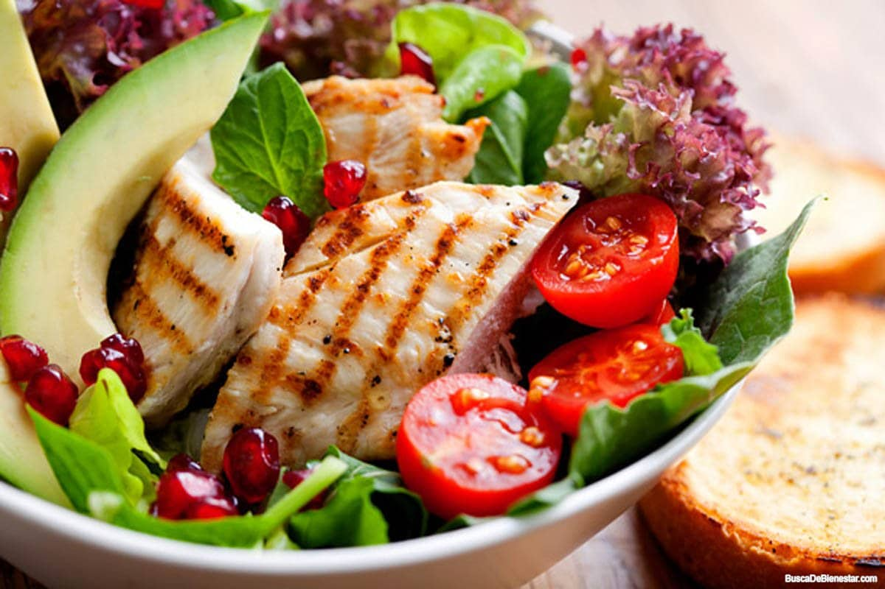
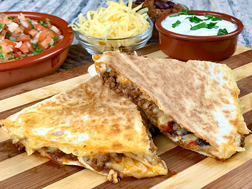

| Imagen |
Descripcion |
Precio |
 |
Un panqueque con fruta: Contiene fresa, moras y platano.
Esta comida rica en carbohidratos puede proporcionar suficiente energía para impulsar la actividad física de un día. |
$60.00 |
 |
Huevo revuelto, con pan tostado (con mantequilla), y tocino.
Este platillo agrega proteinas y carbohidratos, un desayuno mejor preparado.
El huevo es un alimento de gran valor proteico; tiene grandes cantidades de vitaminas A, B6, B12, D y E.
Además es rico en ácido fólico. |
$70.00 |
 |
Yogurt con granola, frutos secos y fruta fresca como la fresa.
Contiene proteínas muy útiles para el ser humano y con una mayor digestibilidad que la leche.
Además, es una buena fuente de vitaminas del grupo B y A y una excelente fuente de minerales como el calcio, fósforo, magnesio y zinc. |
$60.00 |
 |
Pan tostado con queso tipo panela y aguacate con especias.
Entre sus beneficios encuentras: Reduce los niveles de colesterol malo en sangre y aumenta el colesterol bueno.
El queso panela es la opción más recomendada por los nutriólogos para personas con hipertensión o diabetes debido a su bajo aporte en grasa. |
$50.00 |
|
Cereal con leche.
Contiene proteína que contribuye al mantenimiento de la masa muscular, ¡lo cual es bueno para combatir el desgaste diario!
Calcio que mantiene tus dientes y huesos sanos, y es esencial para el crecimiento y desarrollo normal de los huesos de los niños. Con frutos secos como pasas. |
$50.00 |
|
Huevo con tocino, acompañado de frijoles y salchicha, con panes tostados.
Los frijoles son ricos en proteína vegetal, fibra, vitaminas del grupo B, hierro, ácido fólico, calcio, potasio, fósforo y zinc.
La mayoría de los frijoles también tienen pocas grasas.
El tocino salado presenta cantidades considerables de sodio que limitará su consumo en personas hipertensas. |
$80.00 |
|  |
Pechuga con ensalada, tomate, aguacate, lechuga, etc. La carne de pollo es fuente importante de nutrientes como proteínas, lípidos, Vitamina 3 y minerales como calcio, hierro, zinc, sodio, potasio y magnesio, entre otros. De fácil digestión.
Las verduras de hoja verde son una buena opción para una dieta saludable porque no contienen colesterol y son naturalmente bajas en calorías y sodio. |
$120.00 |
|
Pechuga en salsa y arroz blanco. La carne de pollo es fuente importante de nutrientes como proteínas, lípidos, Vitamina 3 y minerales como calcio, hierro, zinc, sodio, potasio y magnesio, entre otros.
De fácil digestión.
Además de la fibra, aporta hidratos de carbono, agua, proteínas, sodio, potasio, fósforo, aceites vegetales, calcio, hierro, provitamina A, etc. |
$100.00 |
|
Albóndigas y arroz blanco.
Contiene proteínas de calidad y grasa monoinsaturada y saturada.
Es rica en hierro, zinc y sodio.
Aporta hidratos de carbono, agua, proteínas, sodio, potasio, fósforo, aceites vegetales, calcio, hierro, provitamina A, etc. |
$60.00 |
|
Pasta en salsa de tomate y queso.
Además de ser un alimento rico en hidratos de carbono, la pasta, por sí sola, apenas contiene grasa y es rica en vitaminas del grupo B.
También es rica en fibra, sobre todo la pasta integral, por lo que contribuye a la salud intestinal y ayuda a controlar el peso. |
$60.00 |
 |
La lasaña (en italiano, lasagna) es un tipo de pasta.
Se suele servir en láminas superpuestas intercaladas con capas de ingredientes al gusto, más frecuentemente carne (ragú) en salsa boloñesa y bechamel.
Su origen es italiano y el plato preparado usualmente con carne suele llamarse lasaña al horno. |
$60.00 |
|
Gorditas de maiz, de carne. De pollo con verdura y aguacate. Y de frijol con queso.
Aunque es posible que el origen de este platillo se remonte al estado de Veracruz, debido a la amplia diversidad de gorditas que existen en todo el país, su procedencia exacta no está clara. |
$90.00 |
|
Boneless, acompañado de apio y un aderezo.
Si prefieres la comodidad y la textura más uniforme, los boneless pueden ser la mejor opción para ti.
La verdura aporta sus nutrientes y la carne sus proteinas. |
$60.00 |
|
Sushi. El sushi tiene un aporte equilibrado de proteínas, hidratos de carbono, fibra, vitaminas y minerales, libres de grasas animales y ricos en omega-3. |
$60.00 |
|  |
Quesadillas, con carne.
El queso, uno de los ingredientes más populares de las quesadillas, es fuente de calcio, que ayuda a fortalecer huesos y dientes.
Contiene ácido fólico, es alto en proteínas y contienen aminoácidos esenciales para el buen funcionamiento de nuestro cuerpo y nuestros músculos. |
$60.00 |
|
Hamburguesa preparada, acompañada de papas.
La carne para hamburguesas es un alimento muy completo con alto contenido de proteínas, vitaminas del complejo B y minerales como el hierro, zinc y selenio, todos ellos necesarios para el buen desarrollo y mantenimiento de nuestro organismo. |
$60.00 |
 |
Hot dog, con papas fritas.
Son productos cárnicos elaborados con carne picada de pollo, ternera o cerdo junto con sal, especias y otros condimentos. |
$40.00 |
|
Empanadas, con crema, verdura y queso.
Las empanadas son una rica fuente de proteínas.
Son una combinación perfecta de carbohidratos y proteínas, lo que los hace ideales para ganar músculo y reparar tejidos. Las empanadas también son una rica fuente de vitaminas. |
$60.00 |
|
Fresas con cremas decoradas con chocolate(blanco o negro), chispas de colores y chispas de chocolate, ideal para un sabor delicioso. |
$50.00 |
|
Flan napolitano, con moras. Delicioso sabor a flan para pasar el momento, con moras dulces e increibles. |
$50.00 |
|
Flan de queso, con jarabe de fresa y fresas entreras.
Convinando ambos sabores, queso y fresa para hacer esta linda combinacion. |
$50.00 |
 |
Pay de limon. El delicioso sabor del pay, pero ahora con ese toque de sabor a limon. |
$40.00 |
 |
Pay de oreo, de lo comun a lo extradulce, con chocolate en el pay y decorado con galletas oreo para una mejor experiencia de sabor. |
$40.00 |
 |
Gelatina.
Con sabores a eleccion de frutas, manzana verde, mora y fresa. Todas dostintas pero el mismo sabor increible.
Incluye trozoz de la fruta elegida. |
$50.00 |
|
Café.
Se denomina café a la bebida preparada por infusión a partir de las semillas del fruto de los cafetos debidamente procesadas y tostadas.
Se caracteriza por un agradable aroma y sabor y es consumido ampliamente a nivel mundial.
|
$30.00 |
|
Té.
El té es la infusión preparada con las hojas secas molidas o brotes del arbusto Camellia sinensis en agua caliente. |
$30.00 |
 |
Agua de limon.
Hidrata: como apuntábamos, es su principal beneficio, debido al agua.
Contiene micronutrientes: es buena fuente de potasio y vitamina C.
Contiene igualmente vitaminas del grupo B, vitamina E, magnesio, calcio y fósforo. |
$30.00 |
|
Agua de horchata.
Los únicos ingredientes que debe llevar son chufas, agua y azúcar, aunque este último es preferible que se encuentre en una menor cantidad.
Para asegurar que solamente contiene estos tres ingredientes, una horchata de elaboración artesanal. |
$30.00 |
 |
Refrescos. Ideal para acompañar la comida, para los amantes del refresco, se ofrecen de varios y dependiendo del gusto o antojo. |
$30.00 |
 |
Bebida energizante.
Las bebidas energizantes o energéticas, también conocidas como hipertónicas, neurotizantes o psicoactivas, son bebidas sin alcohol que contienen sustancias estimulantes, y que ofrecen al consumidor disminuir temporalmente la sensación de fatiga y el agotamiento, además de aumentar la habilidad mental y proporcionar un incremento de la resistencia física. |
$40.00 |